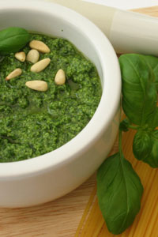

Rocket and Brazil nut Pesto
(taken from mix. by James McIntosh)
Pesto made at home is full of fresh flavours and much nicer than the mass-produced stuff in jars or packets from the supermarket. It’s a cold, no-cook sauce that is delicious when added to pasta dishes and has a thick pouring consistency.
Coats pasta for 4
25g chopped Brazil nuts
Large bunch rocket, washed
2 garlic cloves, peeled
1 tsp sea salt
50g grated Parmesan or Pecorino cheese
200ml extra virgin olive oil
Heat a saucepan and toast the Brazil nuts gently for 1-2 minutes. Place all of the items into a blender or food processor and whizz until it looks like a green sauce.
Serve with freshly cooked pasta, bread or boiled new potatoes.
To order your copy of mix. by James McIntosh, click here.